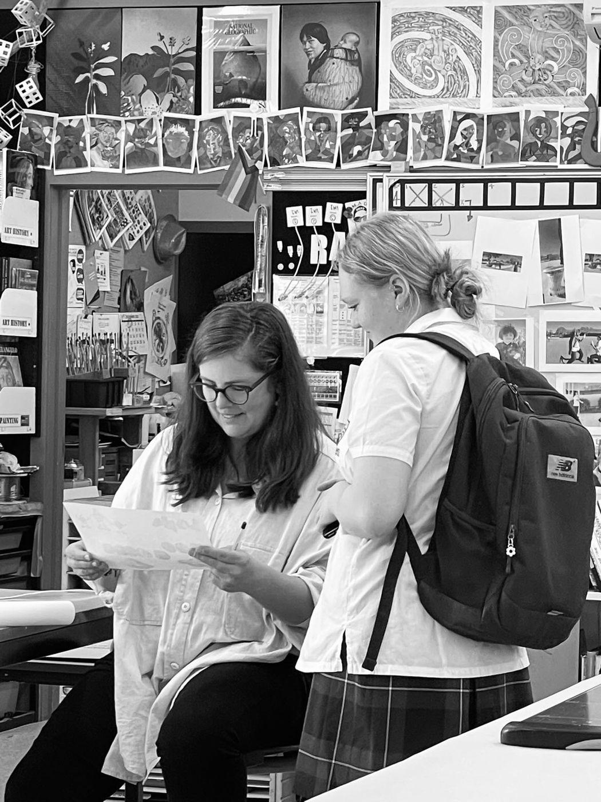
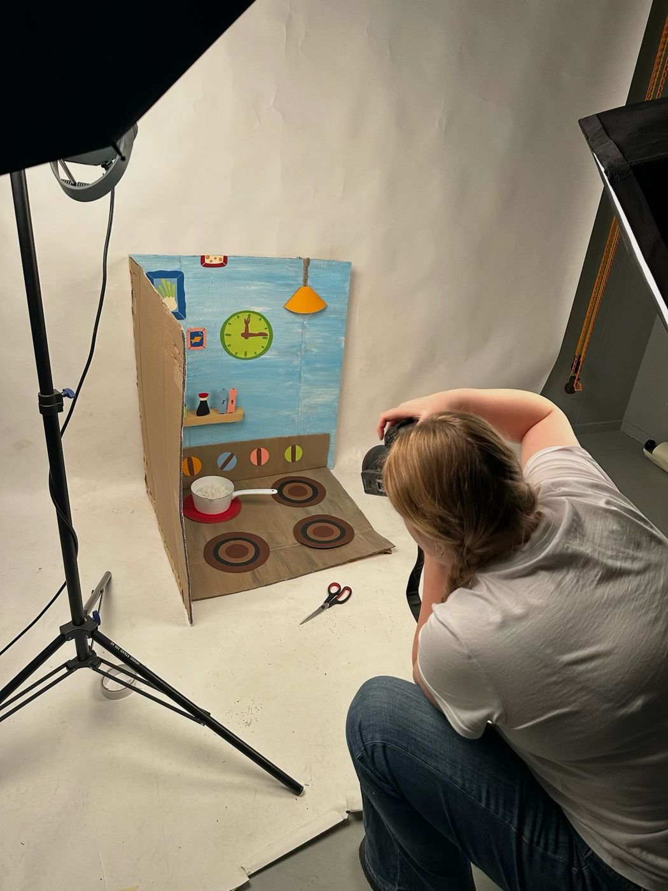
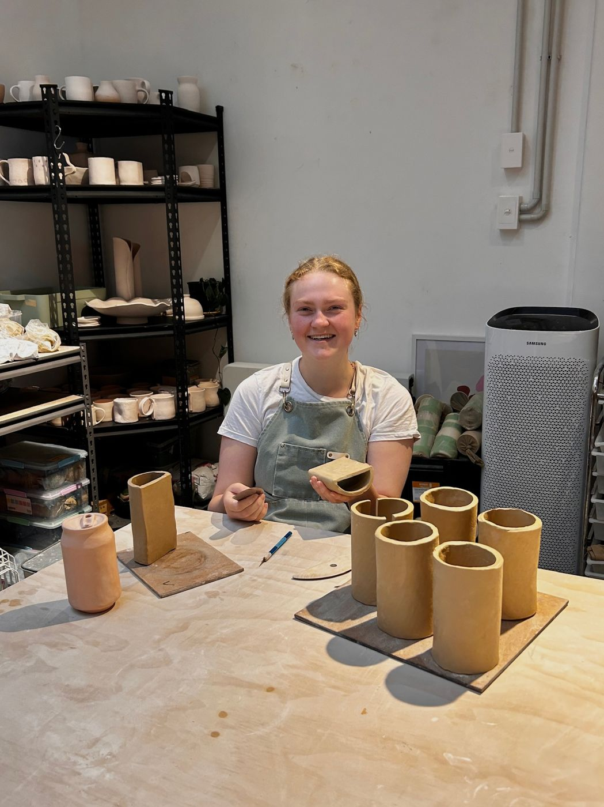
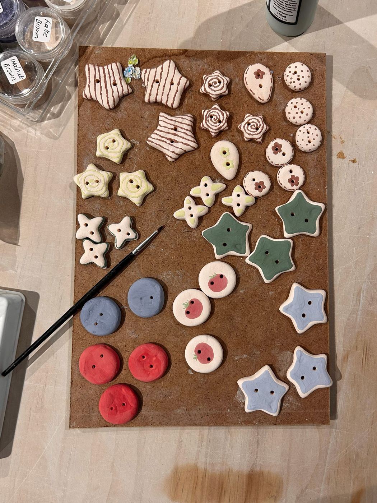
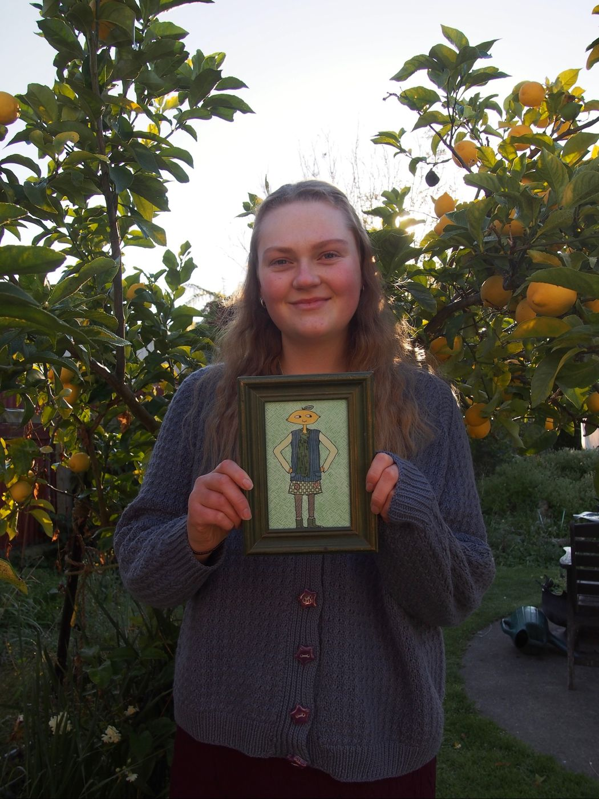
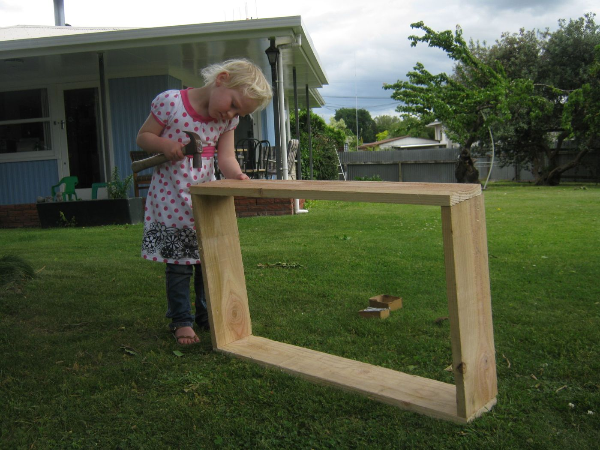

Experiences
Fig n' Fennel believe there are many experiences we have been lucky to have that guide us...
Here's a few that have shaped Jodi
Jodi graduated with a Bachelor of creative practice from EIT. She knew that being a creative was the place she felt most excited by, so studying the many facets of creativity was the perfect fit. This journey allowed her to grow Lanky Design, understand the morals that guide her as well as developing tangible skills in the creative process.
Through her EIT studies she completed an internship at Emily Mallard Ceramics. This bloomed a love for clay. She also enjoyed learning about Emily's creative process as well as her way of teaching. This led to a job for Jodi after graduating which has opened her world to many more creatives.
As a child Jodi was given full creative freedom to create what was in her mind, from launching herself up a tree with a makeshift harness to getting familiar with the hammer. Jodi has created her world from a young age.





